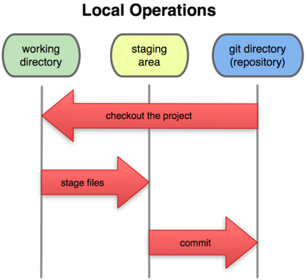

Sistemas Locais (2)

Sistemas de controlo de versões (VCS) são ferramentas para:
Os primeiros VCS registavam modificações de ficheiros apenas numa base de dados local.
Exemplos: SCCS, RCS.
Permitem:
Não permitem:
Os sistemas centralizados registam alterações numa base de dados central; todos os clientes utilizam a mesma base de dados.
Exemplos: CVS, SVN

Vantagens sobre os sistemas locais:
Limitações:
Nos sistemas distribuidos cada cópia do repositório mantém também a base de dados de modificações.
Exemplos: GNU arch, Darcs, Mercurial, Git.

Vantagens sobre sistemas centralizados:
Desvantagens:
git para a gestão de repositóriosmodificar os ficheiros no directório de trabalho
adicionar snapshots dos ficheiros à área de estágio (staging area)
registar um snapshot juntamente com uma mensagem descritiva


Qualquer commit pode ser inspecionado e recuperado se assim quisermos.
Os ficheiros no directório de trabalho podem estar em quatro estados diferentes em relação à copia local doo repositório.

git config --global user.name "Pedro..."
git config --global user.email pbv@dcc.fc.up.ptgit config --listgit help mkdir my_project
cd my_project
git initmy_project/.git que vai conter a base de dados do Gitgit add ficheiro1
git add ficheiro2
Vários ficheiros de uma só vez:
git add ficheiro1 ficheiro2
Os ficheiros ficam na área de estágio --- temos de fazer um commit para os registar na base de dados do Git.
git commit -m "Inicialização do repositório"
NB: podemos adicionar mais ficheiros posteriormente.
Depois de modificar algum(s) dos ficheiros (e.g. usando um editor de texto) devemos:
emacs # editar ficheiros
...
git add ficheiro1 ficheiro2
git commit -m <mensagem>git status
# ver estado da área de trabalho e de estágioChanges to be commitedficheiros modificados que serão incluidos no próximo commit
Changes not staged for commitficheiros modificados mas ainda não incluidos no próximo commit
Untracked filesficheiros na área de trabalho que o Git não está a gerir
git diff
# listar modificações desde o último commitgit log
# Listar o histórico de commits
Estes comandos aceitam muitas opções extra; ver ajuda no manual:
git diff --help
git log --helpEm Git todos os repositórios têm a mesma estrutura e suportam os mesmos comandos.
Um repositório remoto é apenas um diretório Git que está localizado noutro computador.
Para copiar um repositório remoto já inicializado basta fazer clone:
git clone URL-do-repositório-remotohttps://... ou ssh://...Podemos fazer alterações à copia local dos ficheiros tal como anteriormente.
# editar ficheiros localmente
...
git add ficheiro1
git add ficheiro2
...
git commit -m "mensagem descritiva..."
Esta modificação foi registada apenas no repositório local --- nada foi enviado ao servidor remoto!
Para enviar os seus commits locais para o repositório remoto usamos o comando push.
git pushPara receber alterações que outros tenham enviado ao repositório remoto usamos pull:
git pullEste comando descarrega commits no repositório remoto feitos desde a última vez aplica-os ao repositório local.
Sugestão para principiantes:
Se um dos nossos commits modificar parte dum ficheiro que outro colaborador também editou, o Git vai sinalizar um conflito.
O conflito é detetado apenas quando tentarmos sincronizar com um repositório remoto (pull ou push).
git pull
# CONFLICT (content): Merge conflict in file.txt<<<<<<< HEAD:file.txt
Hello world
=======
Goodbye
>>>>>>> 77976da35a11db4... :file.txt
Entre <<<<<< e ===== é a modificação local.
Entre ====== e >>>>>> é a modificação remota.
Editamos file.txt e juntamos as modificações:
Hello world
Goodbye
Registamos um novo commit de resolução:
git add file.txt
git commit -m "resolver conflito"Por fim, fazemos o push da resolução para o repositório remoto.
git pushclonecopiar um repositório remoto
addadicionar ficheiros alterados à àrea de estágio
commitregistar alterações no repositório local
pushenviar alterações ao repositório remoto
pullpedir alterações do repositório remoto
git commit -m "Últimas alterações."
git commit -m "Alterações do Pedro."
git commit -m "Adiciona o Jogador.java."
git commit -m "Alterações no Jogador.java."
git commit -m "Adiciona cenas."
git commit -m "Revision"
git commit -m "Blablabla"
git commit -m "WTFWTFWTF"git commit -m "Resolve o bug do prémio"
git commit -m "Remove duplicação de código"
git commit -m "Acrescenta contagem de pontuação"P: Como fazer para mudar o nome de um ficheiro ou diretório que foi registado no Git?
R: Usamos git mv para mudar o nome de um ficheiro preservando a história de alterações.
git mv nome-atual nome-novoP: Editei um ficheiro na área de trabalho, mas agora quero desfazer essas alterações.
R: Usamos git checkout para reverter modificações de volta para o estado registado no último commit:
git checkout -- nome-do-ficheiroP: Adicionei um ficheiro à área de estágio, mas afinal não quero incluí-lo no próximo commit.
R: Usamos git reset HEAD para remover um ficheiro da área de estágio:
git reset HEAD nome-do-ficheiro